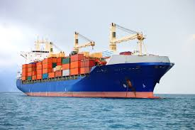
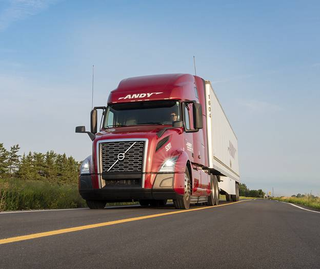

La société incorporée de livraison, de transport et de logistique (LTL Inc., en sigles) sera créée le 16 juillet 2023 après que son fondateur (dont la photo ci-contre) aura fini ses études pour un DEC en Informatique (prévu en décembre 2022) et qu'il aura de la sorte obtenu du revenu pour la création et le lancement de ladite société.
Le fondateur entend obtenir des fonds nécessaires soit des revenus d'emploi qu'il espère obtenir aussitôt qu'il aura terminé ses études, soit des épargnes qu'il aura pu mettre de côté des divers revenus auxquel il ne peut pas penser pour le moment (mais il peut toujours rêver, il n'y a aucune loi contre), soit des aides des membres de sa famille sinon de certains de ses amis ou investisseurs qui croiront en son idée de projet, soit des d'un prêt d'une banque qui saura assez visionnaire pour se commettre d'investir dans cette entreprise avant qu'elle ne soit même pas née pour parler de promesse de rendement.
En tant que société incorporée, après sa création, l'entreprise LTL Inc. émettra donc des actions pour ceux désireuses de faire partie de cet aventure d'avoir leur chance d'y investir. Toutefois, le fondateur entend garder pour soi sinon aux gens de sa famille directe des parts s'élevant ensemble à au moins 50% pour continuer à preserver le contrôle de la société.
Si pour un besoin quelconque de fonds le fondateur consent à accepter plus de fonds d'investissement que 50% de tous les fonds propres de l'entreprise, les parts du fondateur et de sa famille auront n fois de voix par action au vôte pour que la loi du contrôle de la société par le fondateur et les membres de sa famille soit respectée.
Tel que compris dans son appelation, la compagnie LTL Inc. entend avoir pour pour activité principale le transport des biens au profit du public (morale ou physique) qui contracte ses services pour les transporter à leur place du point A où ils se trouvent au point B où ils les veulent; et cela partout dans le monde.
La compagnie LTL Inc. exercera dans trois domaine:
Dans le transport maritime, la compagnie LTL Inc. entend faire affaires dans la livraison des marchandises vendues, à vendre ou commandées par ses clients outremer. Dans ses débuts, la compagnie entend louer les bateaux, les bureaux et tous les autres équipememts appropriés pour la bonne passation des affaires afin de ne pas imposer un grand fardeau de dettes à la compagnie, mais elle acquéra ses propres outils progressivement et cela en fonction des profits qu'elle aura réalisés.
 Pour que ses services soient abordables sinon accessibles à une grande clientèle, la compagnie LTL Inc. entend mettre en service le transport des colis groupés en contenaires pour des livraison à la même destination portiaire, où une espace et un poids minimaux à payer dans le contenaire seront établis et plusieurs clients pourront de la sorte se partager le prix de location d'un contenaire.
Dépendamment du potentiel de profit et de la demande du moment, la compagnie LTL Inc. pourra aussi se lancer dans le transport des personnes à titre spontané, surtout dans le transport des voyageurs en groupe vers des destinations de vacance packet tout inclus (i.e. ticket de voyage, hotels, visite des lieux pré-établis).
La compagnie LTL Inc. comprend que dans ce secteur elle aura des concurrents capables et qui se sont déjà fait un nom comme Conteneurs Nova, mais elle apprendra de la réussite des uns et des échecs des autres pour se tailler sa part du gibier.
Dans le transport terrestre, la compagnie LTL Inc. entend exercerr principalement dans la livraison des biens des gens, soient-ils des marhandises ou des simples colis à livres au service des bénéficiaires.  Dans ses premiers jours, la compagnie entend louer les bateaux, les bureaux et tous les autres équipememts appropriés pour la bonne passation des affaires afin de ne pas imposer un grand fardeau de dettes à la compagnie, mais elle acquéra ses propres outils progressivement et cela en fonction des profits qu'elle aura réalisés.
Suivant la demande et les potentialités de faire profit, la compagnie LTL Inc. se lancera aussi dans le transport des personne en exclusion sur terre à destinations pré-établies sur packet tout inclus (i.e. hotels, billet de voyage, déplacement et repas), ceci dès le départ jusqu'au retour.
Au moment opportun, la compagnie LTL Inc. fera aussi affaires dans la location des voitures pour le transport haute classe des professionnels en mission et hommes d'affaires, et aussi du transport des touristes dans les visites en groupe des lieux touristiques.
Dans le transport terrestre des biens, la compagnie LTL Inc. voit un concurrent modèle en CB Speed et elle se donne pour mission d'émuler ses méthodes et principes avant de se trouver sa propre façon de faire et surtout de mieux faire.
Dans le transport aérien, la compagnie LTL Inc. concentrera son expertise dans le transport cargo des divers produits de marchandises que ses clients voudront lui confier pour leur transport et livraison aux divers coins du mondes de leur choix de destination. Bien entendu, le transport aérien nécessitant des avions appropriés et des plus chers, au début la compagnie se contentera de charger le service d'intermédiaire et confiera le transport requis aux sociétés déjà établies dans ce domaine pour le faire à son nom. La compagnie LTL Inc. pourra aussi louer des avions cargo et transporter les biens lui confiés si assez de biens pour de telles opérations, ou un mélange des deux, jusqu'à ce qu'elle aura des moyens de se doter elle-même de ses propres avions.
La compagnie LTL Inc. pourra aussi entrer dans le transport privé haute classe des hommes d'affaires ou des dignitaires des états de partout dans le monde pour toutes leurs destinations, voire même la prise en charge de leurs déplacements.
La compagnie LTL Inc. pourra aussi se livrer dans le transport touristique aérien. Pour ce faire, la compagnie affretera des hélicoptères ou autres avions appropriés pour le tourisme au service des gens qui en feront demande pour l'exploration ou la découverte des lieux (au dessus des villes, des villages reculés, des paysages, voir même des parcs). La compagnie pourra louer ces avions aux tous débuts de ses activités, mais elle s'équipera de ses propres avions au fur et à mesure qu'elle réalisera des profits dans ce domaine et que les potentialités du marché prouveront que cette action serait rationnelle.
Dans le transport aérien, la compagnie LTL Inc. prendra pour cible la performance de Cargo Jet avant de s'atteler à l'émulation ou même le dépassement de la performance des autres transporteurs aériens de renom.
Avez-vous des questions non répondues, des informations désirées non trouvées, ou simplement vous vous demandez comment vous pourriez faire affaires avec nous?
Visitez soit